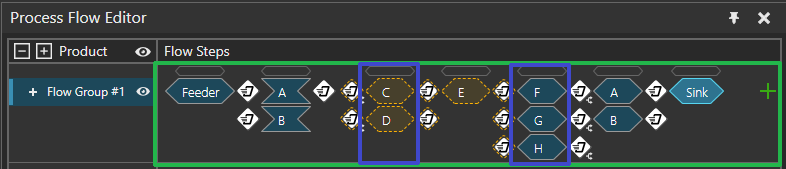

In the image below, outlined in green is the vcProcessSequence2. There's one for each FlowGroup, and it contains a sequence of steps. Outlined In blue are two vcProcessFlowStep (out of 7). They may contain ProcessGroups (those A,B,C,D,...) and different modes of operation (First available process, All processes in any order). These modes affect how single products move through the flow (they may skip optional steps, ...).

| Name | Data type | Access | Description |
| FlowSteps | vcObservableList <ProcessFlowStep> | R | List of FlowSteps |
| Name | Return Type | Parameters | Description |
| getNextProcessOptions | vcFeedOptionFlowInfo[] |
|
Returns a list of possible FlowInfo options in priority order
given the inputs.
|